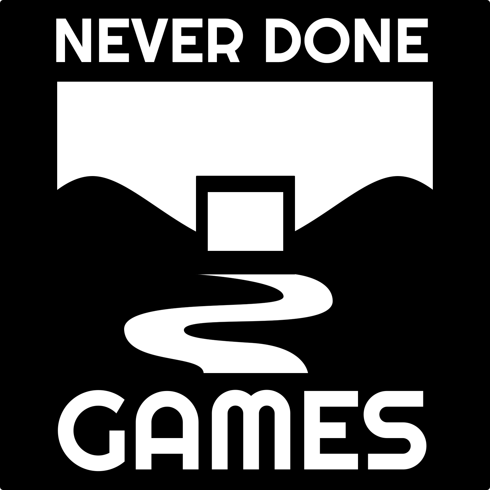

Assemble a team of strange creatures and outsmart your opponents before your monsters turn on you. Your creatures remember how you treat them in a dynamic branching narrative. Build relationships with your team as you balance your strategies with their needs.
Play against friends or strangers in a customizable sandbox for online play. Or choose from a variety of single-player challenges and modes. No matter how you play, your creatures are watching...

NEVER DONE GAMES is the studio name of Kaelan Doyle-Myerscough and Andrew Tran. We make the kinds of games that have never been done before - strange games in vivid worlds with unconventional mechanics.
Kaelan Doyle-Myerscough(they/he) is our writer, narrative designer and artist.
Kaelan has previously worked in narrative design roles at Gamma Space Studio and Kitten Cup Studio.
They are also a games researcher writing their PhD on experimental worldbuilding methods for games.
When they're not futzing with Ink or fretting over pixel-perfect lines,
Kaelan enjoys knitting and sewing their own clothes.
Andrew Tran (he/they) is our software engineer and musician. Andrew has worked in the game industry for three years as a senior software engineer. At his day job, he works at the gaming startup One More Multiverse.
Andrew dreams of making accessible engines
and tools for game-making. Then he wakes up, waters his little forest of plants, and cooks delicious food.
Our first game, The Archipelago, is a tea-making narrative game about trauma and social change. The Archipelago is available on Steam, Android and itch.io.
 Assemble a team of strange creatures and outsmart your opponents before your monsters turn on you. Your creatures remember how you treat them in a dynamic branching narrative. Build relationships with your team as you balance your strategies with their needs.
Assemble a team of strange creatures and outsmart your opponents before your monsters turn on you. Your creatures remember how you treat them in a dynamic branching narrative. Build relationships with your team as you balance your strategies with their needs.